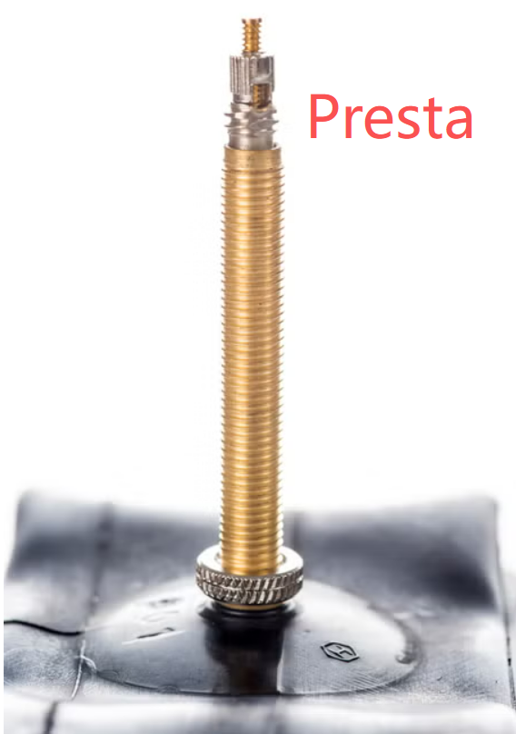
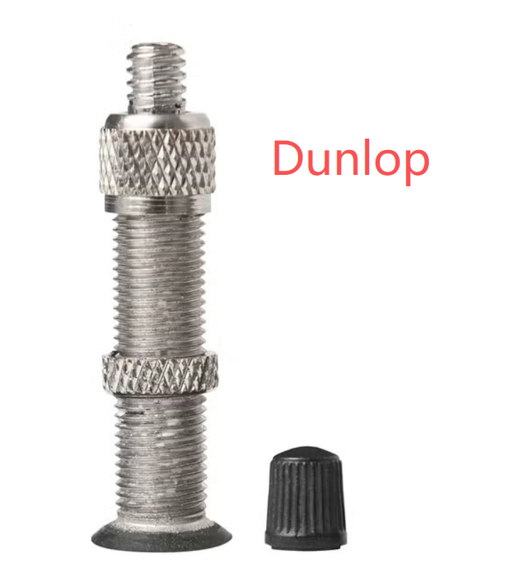

If you need to replace the outer tire or inner tube, please check the sidewall of your bike’s wheel. The tire size is printed there, for example 26 × 1.75 or 47‑559. Send us this information so we can prepare the correct parts for your bike. Here you can also learn the basic knowledge of tire sizes.
What tire sizes mean (the two systems)
1) Inch system — e.g., 26 × 1.75
- 26 = wheel diameter (in inches)
- 1.75 = tire width (in inches)
This system is common on:
- City bikes
- Older mountain bikes
- Kids’ bikes
2) ETRTO / ISO system — e.g., 47‑559
This is the most accurate system.
- 47 = tire width (in millimeters)
- 559 = bead seat diameter (BSD), the inner diameter of the tire (in mm)
ETRTO is used by manufacturers worldwide because it avoids confusion.
Three valve types
- American Schrader: the wide valve used on car tires — common on hybrid, mountain, and kids’ bikes.
-
French Presta: the narrow valve with a screw-on tip — used on most road and gravel bikes.

-
UK Dunlop: mainly used on European city bikes. It looks like a wider Schrader valve with a Presta-style valve core.
It is an older valve type that has mostly been replaced by the Schrader valve.
